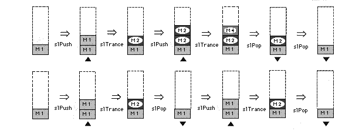

Return to previous page | Return to menu | Go to next page
Bool
Matrix function
Temporarily secure the matrix (up to 20 matrix nestings)
Bool slPushMatrix()
None
Advance the pointer of the matrix buffer, copy the previous current matrix into it, and make it the new current matrix.
If the pointer allocation fails, the function returns FALSE.
You can nest up to 20 matrix buffers.
If 20 is exceeded and an attempt is made to allocate a matrix buffer, the function returns FALSE.
The following figure is an image model of stack operation.

Reference: Chapter 5 Matrix
slPushMatrix